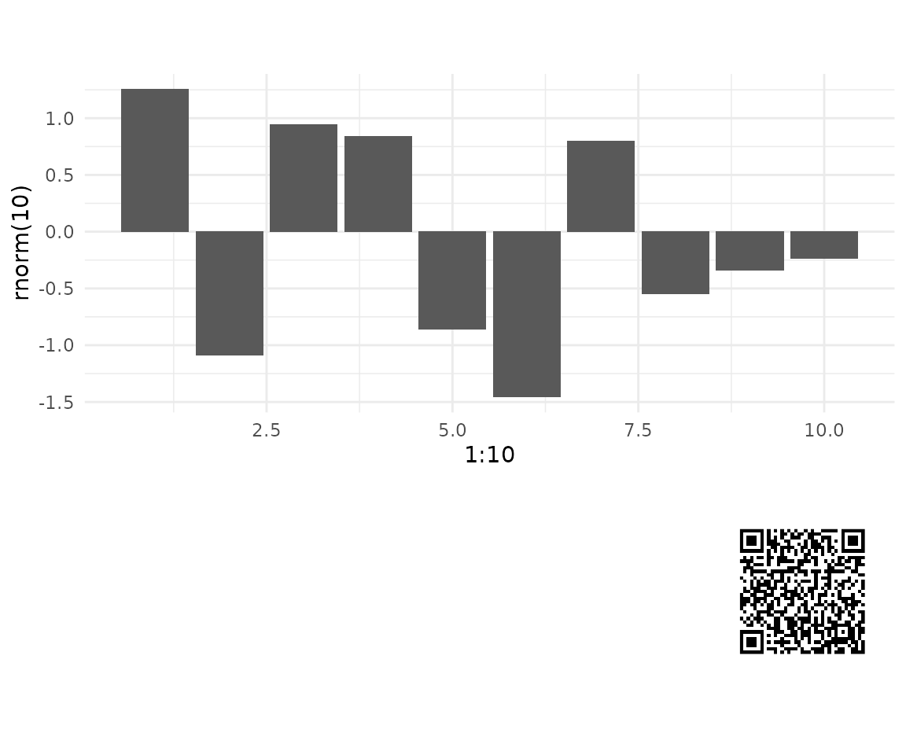
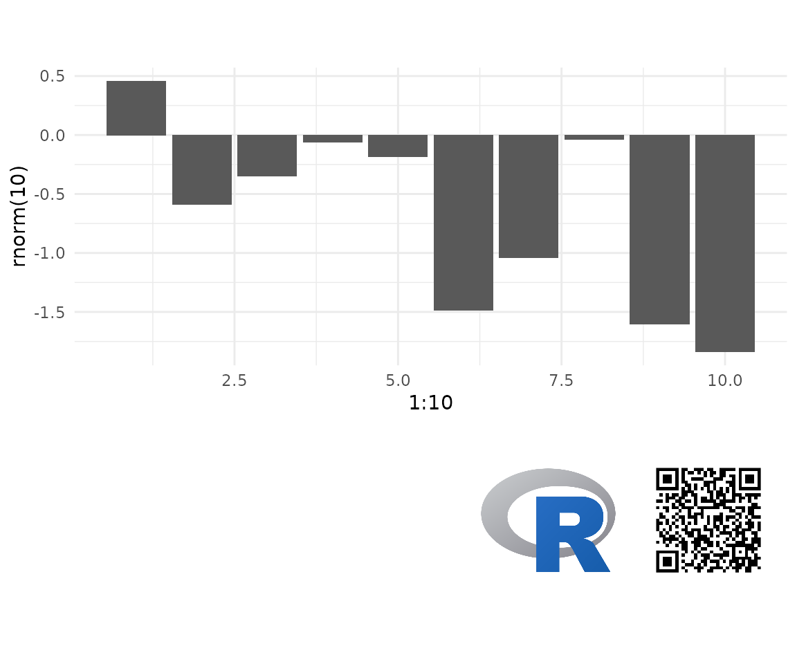

Using ggtrack
To start you just need a ggplot and some text you wish to encode into the QR. The QR is intended to contain enough information to uniquely identify the report, so a URL, file name or other unique identifier. The QR encode process automatically appends a time stamp. But try to keep the content of the QR code minimal. The for information it is the more pixels its requires and the larger it needs to be. The examples here need a QR code size of 1.8cm to be reliably scanned using a phone off the screen. QR code are encoded using the qrencoder package.
library(ggtrack)
#> Warning: replacing previous import 'ggplot2::last_plot' by 'plotly::last_plot'
#> when loading 'ggtrack'
library(ggplot2)
library(grid)
gg <- ggplot(mapping = aes(x = 1:10, y = rnorm(10))) +
geom_bar(stat = 'identity') +
theme_minimal()
ggtrack(gg,
qr_content = 'Report ID: 2c9075a5-4d7e-47a5-8616-55dd88af3dc5')
Add a Logo
A logo can be added either from a local or remote source. For now only png and jpeg/jpg are supported.
ggtrack(gg,
qr_content = 'text content here',
logo = 'https://www.r-project.org/logo/Rlogo.png')
Add a Caption
Captions use the gridtext package. So you can use both HTML and markdown to style. Or if you prefer, create your own grob and pass that through instead.
g = ggtrack(gg,
qr_content = 'For all your image tracking needs: https://github.com/mrjoh3/ggtrack',
logo = 'https://www.r-project.org/logo/Rlogo.png',
caption = 'Lots of extra info, or a fancy <span style="color:blue">"grob"</span>.')
grid.draw(g)
Interactive Plots
ggtrack(gg,
qr_content = 'For all your image tracking needs: https://github.com/mrjoh3/ggtrack',
logo = 'https://www.r-project.org/logo/Rlogo.png',
caption = 'Lots of extra info, or a fancy <span style="color:blue">"grob"</span>.',
interactive = TRUE)
#> Warning in geom2trace.default(dots[[1L]][[1L]], dots[[2L]][[1L]], dots[[3L]][[1L]]): geom_GeomCustomAnn() has yet to be implemented in plotly.
#> If you'd like to see this geom implemented,
#> Please open an issue with your example code at
#> https://github.com/ropensci/plotly/issues
#> Warning in geom2trace.default(dots[[1L]][[1L]], dots[[2L]][[1L]], dots[[3L]][[1L]]): geom_GeomCustomAnn() has yet to be implemented in plotly.
#> If you'd like to see this geom implemented,
#> Please open an issue with your example code at
#> https://github.com/ropensci/plotly/issues
#> Warning in geom2trace.default(dots[[1L]][[1L]], dots[[2L]][[1L]], dots[[3L]][[1L]]): geom_GeomCustomAnn() has yet to be implemented in plotly.
#> If you'd like to see this geom implemented,
#> Please open an issue with your example code at
#> https://github.com/ropensci/plotly/issuesAdd a download link
ggsave(g, filename = 'first.png')
#> Saving 7.29 x 4.51 in image{kind=link}
make_download(g)
#> Saving 7.29 x 4.51 in image
#> <a href="chart_20210628-051245.png" download="chart_20210628-051245.png">download</a>{kind=link}